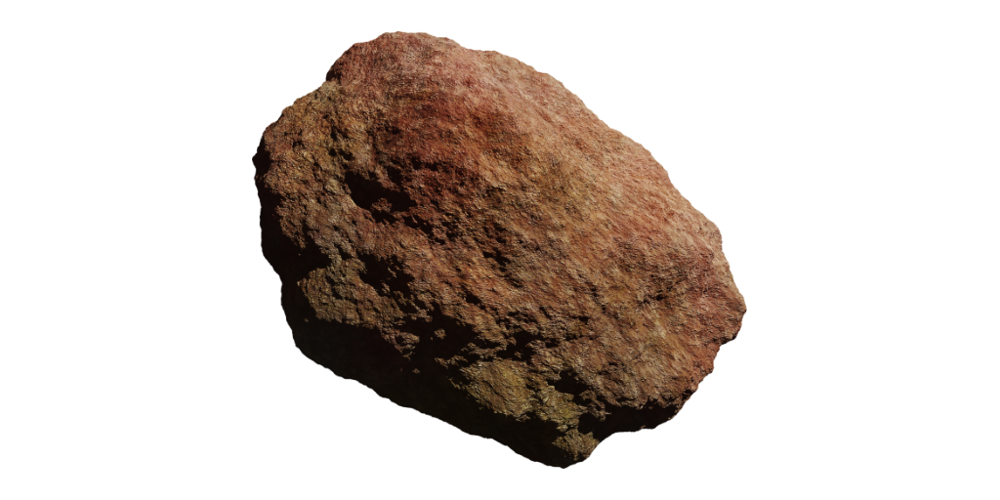

This band of asteroids is the next important area of the Solar System after Mars. It is a vast region of space with huge amounts
of wealth, but acquiring these resources is very difficult, and maintaining control over regions is impossible due to the distances
between asteroids. Finding other outposts is difficult, and stealth is easy. It’s an excellent location for outposts,
laboratories, mining, and everything in between. Setting up a base of operations here is a major milestone for all space programs.
Contains:
*
Ceres
* Plus millions of minors
Resources:
* Minerals
Dangers:
* Low gravity
* No atmosphere
* No gravity
* Cold
* Navigation
Sol AB - Inner Boundary
Asteroid Belt